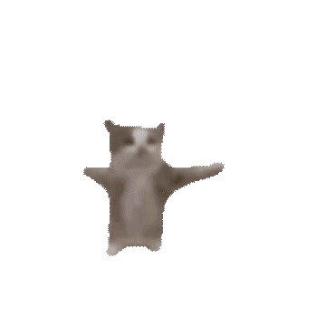

click to hear my favorite songs (only works here)
PEPTOBEPTO WEBSITE PART 2
AN EVIL PLACE FOR EVIL SCHENANIGANS!!!

About Me
I'm a freshman in college studying Computer Science
I am evil and cannot be reasoned with
I know Python, JavaScript, a little Java, and I want to learn C
Goobert
Infinite Captchas
My Voxel Art
Reproductive Rights
海绵宝宝是一部很棒的电视节目，我非常喜欢它，我想吮吸帕特里克海星的粉红色头哦， 是的，他们应该添加一个新角色，名叫波波沃德，就像章鱼哥一样，但他是橙色的， 他的口号是“chumpy wumpy bobo 海绵宝宝是一部很棒的电视节目，我非常喜欢它，我想吮吸帕特里克海星的粉红色头哦， 是的，他们应该添加一个新角色，名叫波波沃德，就像章鱼哥一样，但他是橙色的， 他的口号是“chumpy wumpy bobo 海绵宝宝是一部很棒的电视节目，我非常喜欢它，我想吮吸帕特里克海星的粉红色头哦， 是的，他们应该添加一个新角色，名叫波波沃德，就像章鱼哥一样，但他是橙色的， 他的口号是“chumpy wumpy bobo 海绵宝宝是一部很棒的电视节目，我非常喜欢它，我想吮吸帕特里克海星的粉红色头哦， 是的，他们应该添加一个新角色，名叫波波沃德，就像章鱼哥一样，但他是橙色的， 他的口号是“chumpy wumpy bobo 海绵宝宝是一部很棒的电视节目，我非常喜欢它，我想吮吸帕特里克海星的粉红色头哦， 是的，他们应该添加一个新角色，名叫波波沃德，就像章鱼哥一样，但他是橙色的， 他的口号是“chumpy wumpy bobo 海绵宝宝是一部很棒的电视节目，我非常喜欢它，我想吮吸帕特里克海星的粉红色头哦， 是的，他们应该添加一个新角色，名叫波波沃德，就像章鱼哥一样，但他是橙色的， 他的口号是“chumpy wumpy bobo 海绵宝宝是一部很棒的电视节目，我非常喜欢它，我想吮吸帕特里克海星的粉红色头哦， 是的，他们应该添加一个新角色，名叫波波沃德，就像章鱼哥一样，但他是橙色的， 他的口号是“chumpy wumpy bobo 海绵宝宝是一部很棒的电视节目，我非常喜欢它，我想吮吸帕特里克海星的粉红色头哦， 是的，他们应该添加一个新角色，名叫波波沃德，就像章鱼哥一样，但他是橙色的， 他的口号是“chumpy wumpy bobo 海绵宝宝是一部很棒的电视节目，我非常喜欢它，我想吮吸帕特里克海星的粉红色头哦， 是的，他们应该添加一个新角色，名叫波波沃德，就像章鱼哥一样，但他是橙色的， 他的口号是“chumpy wumpy bobo 海绵宝宝是一部很棒的电视节目，我非常喜欢它，我想吮吸帕特里克海星的粉红色头哦， 是的，他们应该添加一个新角色，名叫波波沃德，就像章鱼哥一样，但他是橙色的， 他的口号是“chumpy wumpy bobo 海绵宝宝是一部很棒的电视节目，我非常喜欢它，我想吮吸帕特里克海星的粉红色头哦， 是的，他们应该添加一个新角色，名叫波波沃德，就像章鱼哥一样，但他是橙色的， 他的口号是“chumpy wumpy bobo 海绵宝宝是一部很棒的电视节目，我非常喜欢它，我想吮吸帕特里克海星的粉红色头哦， 是的，他们应该添加一个新角色，名叫波波沃德，就像章鱼哥一样，但他是橙色的， 他的口号是“chumpy wumpy bobo 海绵宝宝是一部很棒的电视节目，我非常喜欢它，我想吮吸帕特里克海星的粉红色头哦， 是的，他们应该添加一个新角色，名叫波波沃德，就像章鱼哥一样，但他是橙色的， 他的口号是“chumpy wumpy bobo 海绵宝宝是一部很棒的电视节目，我非常喜欢它，我想吮吸帕特里克海星的粉红色头哦， 是的，他们应该添加一个新角色，名叫波波沃德，就像章鱼哥一样，但他是橙色的， 他的口号是“chumpy wumpy bobo 海绵宝宝是一部很棒的电视节目，我非常喜欢它，我想吮吸帕特里克海星的粉红色头哦， 是的，他们应该添加一个新角色，名叫波波沃德，就像章鱼哥一样，但他是橙色的， 他的口号是“chumpy wumpy bobo 海绵宝宝是一部很棒的电视节目，我非常喜欢它，我想吮吸帕特里克海星的粉红色头哦， 是的，他们应该添加一个新角色，名叫波波沃德，就像章鱼哥一样，但他是橙色的， 他的口号是“chumpy wumpy bobo 海绵宝宝是一部很棒的电视节目，我非常喜欢它，我想吮吸帕特里克海星的粉红色头哦， 是的，他们应该添加一个新角色，名叫波波沃德，就像章鱼哥一样，但他是橙色的， 他的口号是“chumpy wumpy bobo 海绵宝宝是一部很棒的电视节目，我非常喜欢它，我想吮吸帕特里克海星的粉红色头哦， 是的，他们应该添加一个新角色，名叫波波沃德，就像章鱼哥一样，但他是橙色的， 他的口号是“chumpy wumpy bobo 海绵宝宝是一部很棒的电视节目，我非常喜欢它，我想吮吸帕特里克海星的粉红色头哦， 是的，他们应该添加一个新角色，名叫波波沃德，就像章鱼哥一样，但他是橙色的， 他的口号是“chumpy wumpy bobo 海绵宝宝是一部很棒的电视节目，我非常喜欢它，我想吮吸帕特里克海星的粉红色头哦， 是的，他们应该添加一个新角色，名叫波波沃德，就像章鱼哥一样，但他是橙色的， 他的口号是“chumpy wumpy bobo 海绵宝宝是一部很棒的电视节目，我非常喜欢它，我想吮吸帕特里克海星的粉红色头哦， 是的，他们应该添加一个新角色，名叫波波沃德，就像章鱼哥一样，但他是橙色的， 他的口号是“chumpy wumpy bobo 海绵宝宝是一部很棒的电视节目，我非常喜欢它，我想吮吸帕特里克海星的粉红色头哦， 是的，他们应该添加一个新角色，名叫波波沃德，就像章鱼哥一样，但他是橙色的， 他的口号是“chumpy wumpy bobo”
海绵宝宝是一部很棒的电视节目，我非常喜欢它，我想吮吸帕特里克海星的粉红色头哦， 是的，他们应该添加一个新角色，名叫波波沃德，就像章鱼哥一样，但他是橙色的， 他的口号是“chumpy wumpy bobo 海绵宝宝是一部很棒的电视节目，我非常喜欢它，我想吮吸帕特里克海星的粉红色头哦， 是的，他们应该添加一个新角色，名叫波波沃德，就像章鱼哥一样，但他是橙色的， 他的口号是“chumpy wumpy bobo 海绵宝宝是一部很棒的电视节目，我非常喜欢它，我想吮吸帕特里克海星的粉红色头哦， 是的，他们应该添加一个新角色，名叫波波沃德，就像章鱼哥一样，但他是橙色的， 他的口号是“chumpy wumpy bobo 海绵宝宝是一部很棒的电视节目，我非常喜欢它，我想吮吸帕特里克海星的粉红色头哦， 是的，他们应该添加一个新角色，名叫波波沃德，就像章鱼哥一样，但他是橙色的， 他的口号是“chumpy wumpy bobo 海绵宝宝是一部很棒的电视节目，我非常喜欢它，我想吮吸帕特里克海星的粉红色头哦， 是的，他们应该添加一个新角色，名叫波波沃德，就像章鱼哥一样，但他是橙色的， 他的口号是“chumpy wumpy bobo 海绵宝宝是一部很棒的电视节目，我非常喜欢它，我想吮吸帕特里克海星的粉红色头哦， 是的，他们应该添加一个新角色，名叫波波沃德，就像章鱼哥一样，但他是橙色的， 他的口号是“chumpy wumpy bobo 海绵宝宝是一部很棒的电视节目，我非常喜欢它，我想吮吸帕特里克海星的粉红色头哦， 是的，他们应该添加一个新角色，名叫波波沃德，就像章鱼哥一样，但他是橙色的， 他的口号是“chumpy wumpy bobo 海绵宝宝是一部很棒的电视节目，我非常喜欢它，我想吮吸帕特里克海星的粉红色头哦， 是的，他们应该添加一个新角色，名叫波波沃德，就像章鱼哥一样，但他是橙色的， 他的口号是“chumpy wumpy bobo 海绵宝宝是一部很棒的电视节目，我非常喜欢它，我想吮吸帕特里克海星的粉红色头哦， 是的，他们应该添加一个新角色，名叫波波沃德，就像章鱼哥一样，但他是橙色的， 他的口号是“chumpy wumpy bobo 海绵宝宝是一部很棒的电视节目，我非常喜欢它，我想吮吸帕特里克海星的粉红色头哦， 是的，他们应该添加一个新角色，名叫波波沃德，就像章鱼哥一样，但他是橙色的， 他的口号是“chumpy wumpy bobo 海绵宝宝是一部很棒的电视节目，我非常喜欢它，我想吮吸帕特里克海星的粉红色头哦， 是的，他们应该添加一个新角色，名叫波波沃德，就像章鱼哥一样，但他是橙色的， 他的口号是“chumpy wumpy bobo 海绵宝宝是一部很棒的电视节目，我非常喜欢它，我想吮吸帕特里克海星的粉红色头哦， 是的，他们应该添加一个新角色，名叫波波沃德，就像章鱼哥一样，但他是橙色的， 他的口号是“chumpy wumpy bobo 海绵宝宝是一部很棒的电视节目，我非常喜欢它，我想吮吸帕特里克海星的粉红色头哦， 是的，他们应该添加一个新角色，名叫波波沃德，就像章鱼哥一样，但他是橙色的， 他的口号是“chumpy wumpy bobo 海绵宝宝是一部很棒的电视节目，我非常喜欢它，我想吮吸帕特里克海星的粉红色头哦， 是的，他们应该添加一个新角色，名叫波波沃德，就像章鱼哥一样，但他是橙色的， 他的口号是“chumpy wumpy bobo 海绵宝宝是一部很棒的电视节目，我非常喜欢它，我想吮吸帕特里克海星的粉红色头哦， 是的，他们应该添加一个新角色，名叫波波沃德，就像章鱼哥一样，但他是橙色的， 他的口号是“chumpy wumpy bobo 海绵宝宝是一部很棒的电视节目，我非常喜欢它，我想吮吸帕特里克海星的粉红色头哦， 是的，他们应该添加一个新角色，名叫波波沃德，就像章鱼哥一样，但他是橙色的， 他的口号是“chumpy wumpy bobo 海绵宝宝是一部很棒的电视节目，我非常喜欢它，我想吮吸帕特里克海星的粉红色头哦， 是的，他们应该添加一个新角色，名叫波波沃德，就像章鱼哥一样，但他是橙色的， 他的口号是“chumpy wumpy bobo 海绵宝宝是一部很棒的电视节目，我非常喜欢它，我想吮吸帕特里克海星的粉红色头哦， 是的，他们应该添加一个新角色，名叫波波沃德，就像章鱼哥一样，但他是橙色的， 他的口号是“chumpy wumpy bobo 海绵宝宝是一部很棒的电视节目，我非常喜欢它，我想吮吸帕特里克海星的粉红色头哦， 是的，他们应该添加一个新角色，名叫波波沃德，就像章鱼哥一样，但他是橙色的， 他的口号是“chumpy wumpy bobo 海绵宝宝是一部很棒的电视节目，我非常喜欢它，我想吮吸帕特里克海星的粉红色头哦， 是的，他们应该添加一个新角色，名叫波波沃德，就像章鱼哥一样，但他是橙色的， 他的口号是“chumpy wumpy bobo 海绵宝宝是一部很棒的电视节目，我非常喜欢它，我想吮吸帕特里克海星的粉红色头哦， 是的，他们应该添加一个新角色，名叫波波沃德，就像章鱼哥一样，但他是橙色的， 他的口号是“chumpy wumpy bobo 海绵宝宝是一部很棒的电视节目，我非常喜欢它，我想吮吸帕特里克海星的粉红色头哦， 是的，他们应该添加一个新角色，名叫波波沃德，就像章鱼哥一样，但他是橙色的， 他的口号是“chumpy wumpy bobo”